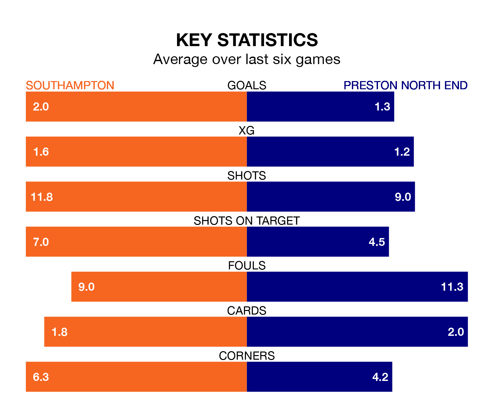

Southampton are heavy favourites to keep all three points at home in Tuesday's late kick-off against Preston North End.
The Saints, who sit fourth in EFL Championship with 41 games played, are priced at 1.4 to seal victory at St. Mary's.
Sitting six places and 18 points behind them in the table, Preston are 7.2 to win with *Betting Company*, while the draw is at 5.0.
With 81 goals in 41 games so far this season, Southampton are the league's second-highest scorers with 2.0 goals per game. And they are conceding at an average rate, letting in 54 goals at a rate of 1.3 per game.
Preston, meanwhile, are average scorers, with 1.3 goals per game. They have conceded 1.4 goals per game.
In Adam Armstrong, the Saints have one of the league's most on-form strikers so far this season. He has notched 20 goals in 41 appearances, to sit second in the scoring charts.
His goal rate of one every 170 minutes is slightly quicker than that of Will Keane, North End's top scorer with a goal every 180 minutes, and a total of 13 goals in 34 games.
The hosts are in reasonable form in EFL Championship, with three wins and two draws from their last six games.
With three wins and a draw over that period, the Lilywhites' form is slightly worse – they have taken 10 points from 18, compared to Southampton's 11.
Southampton's last match was on Saturday, a 3-2 win against Watford, with Che Adams, Flynn Downes and William Smallbone getting the goals for the Saints.
Preston lost 1-0 against Norwich City last time out, also on Saturday.
Tuesday's match will be refereed by Ben Toner, who has taken charge of four EFL Championship games so far this season, issuing no red cards and booking 19 players. He has awarded two penalties.
The last Southampton game Toner refereed was a 1-1 away draw with Coventry City on December 13. He is yet to oversee a match featuring Preston this season.
Updated: 11:31 (UTC), 15/04/24